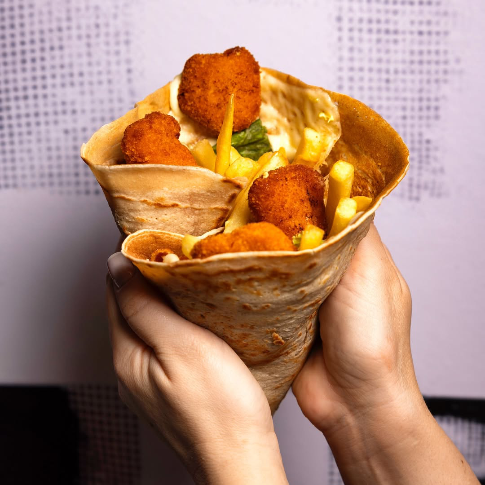
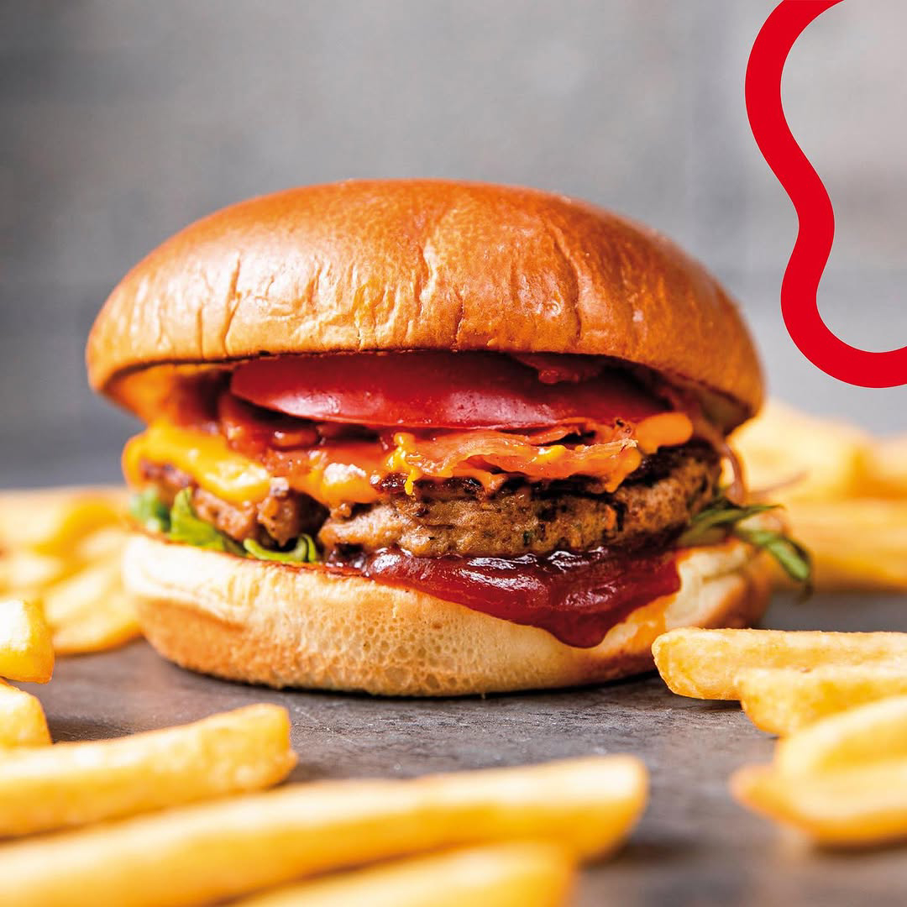
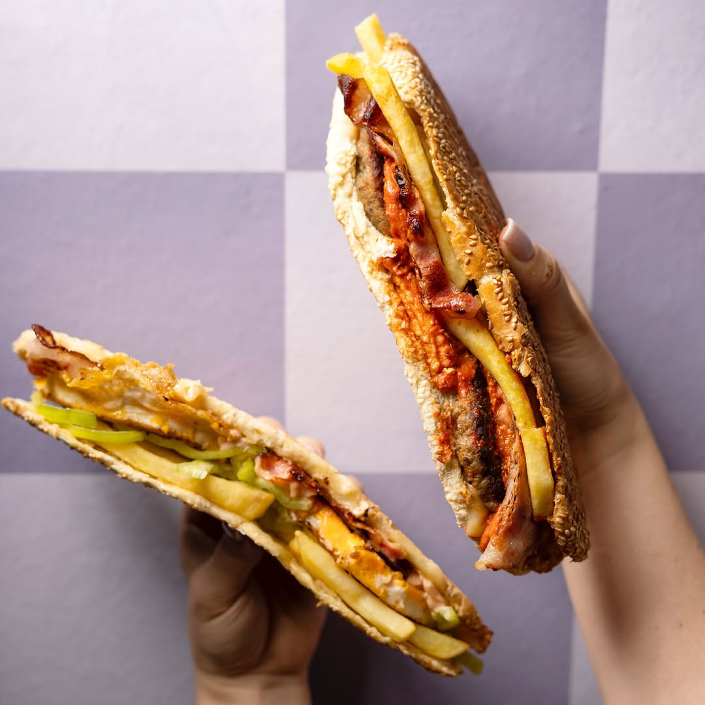
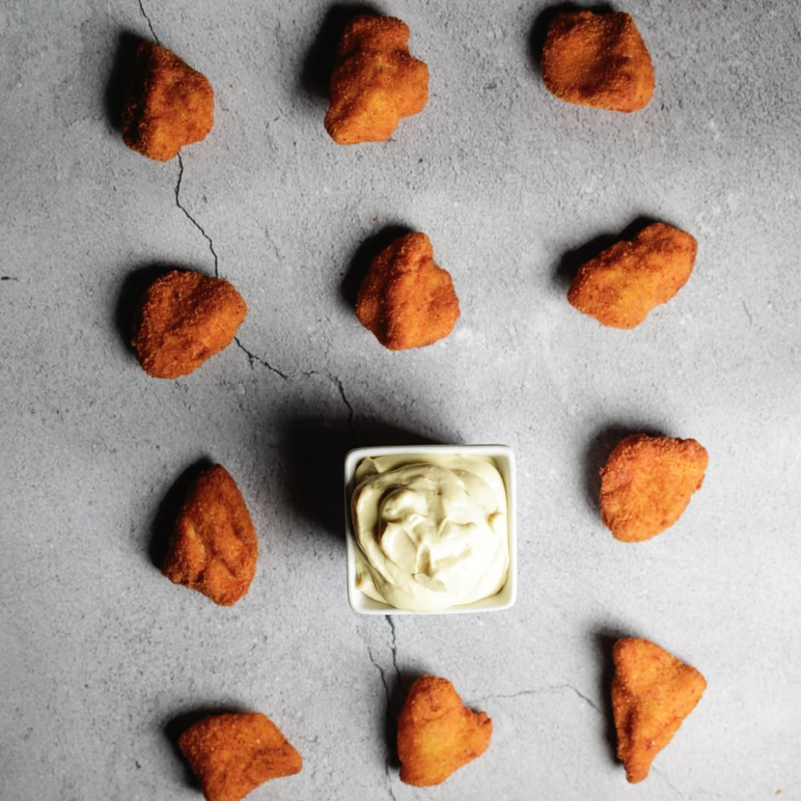

Κρέπες • Burgers • Sandwiches • Sides • Drinks
Δες το Μενού
Γλυκιές ή αλμυρές, φτιαγμένες στη στιγμή.

Ζουμερά, φρεσκοψημένα & 100% Black Angus.

Φρέσκα υλικά & καθημερινές επιλογές.

Για αυτούς που θέλουν το κάτι έξτρα.